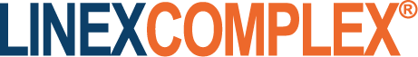
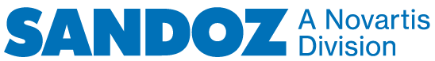

Dobrodošli na @Neka.svaki.dan.bude.tvoj
Instagram stranicu, drago nam je što ste ovde.
Ovom prilikom želeli bismo da podelimo nekoliko jednostavnih „kućnih pravila“
kako bismo svima pomogli da iz ovog community-a izvučemo najbolje.
Instagram stranica „Neka svaki dan bude tvoj“ poštuje Instagram pravila korišćenja [2]. Sadržaj na našem feedu je samo informativne namene i odnosi se na kompaniju i njene inicijative. Važno je napomenuti da ova stranica nije zamena za profesionalni medicinski savet, dijagnozu ili lečenje. Za takve informacije obratite se svom lekaru ili drugom kvalifikovanom zdravstvenom radniku.
Zahvalni smo na prilici da međusobno komuniciramo, komentarisanjem na feed-u, kao i kroz direct messages, ali bismo želeli da napomenemo da radimo u regulisanoj industriji sa jedinstvenom pravnom regulativom i kodeksom ponašanja. Iz tog razloga, ne možemo se baviti osetljivim temama ili diskusijama o proizvodima - naše ili drugih kompanija - ili o lečenju na Instagramu. Zadržavamo pravo uklanjanja neželjene pošte i sadržaja ili postova koji nisu u skladu sa temom, pozivaju na nasilje, diskriminaciju ili uznemiravanje.
Molimo vas da poštujete druge članove naše zajednice tako što ćete osigurati da ne:
- Pominjete zaštićene nazive lekova
- Koristite psovke, kletve, klevete, uvrede, nasilje, diskriminaciju ili ponižavajući sadržaj (uključujući slike, video zapise i veze) u vašem postu;
- Omalovažavate ili pretite ili promovišite nasilje ili nezakonito ponašanje u vašem postu;
- Skrećete sa teme sa svojim postovima;
- Nudite zdravstveni ili medicinski savet u svom postu;
- Uključujete svoje lične podatke, kao što su adresa e-pošte ili broj telefona;
- Kršite tuđa autorska prava ili druga prava intelektualne svojine;
- Objavljujete da nudite poslovne usluge ili delite komercijalne informacije, npr. prodaju proizvoda i / ili usluge ili regrutujte fanove i sledbenike;
- Objavljujete materijal koji se preterano ponavlja i / ili remeti zajednicu ili je neželjena pošta;
- Objavljujete informacije koje sadrže zaštićene, poverljive, osetljive ili privatne informacije;
- Kršite uslove korišćenja Instagram-a.
Ako vaš post ili komentar nisu u skladu sa našim smernicama zajednice, može biti blokiran ili skriven.
Potrudićemo se da odgovorimo na bilo kakve direktne poruke u roku od 48 sati.
Instagram nalozi koje stranica „Neka svaki dan bude tvoj“ prati ili od kojih je praćena nisu podržani ili potvrđeni od strane Sandoza. Bilo koji sadržaj koji Sandoz repostuje ili na koje odreaguje nisu potvrda samog sadržaja.
Neželjeni efekti (neželjeni događaji)
Prijavljivanje neželjenih efekata povezanih sa Sandoz proizvodima
Poželjno je da se Instagram ne koristi za prijavljivanje neželjenih efekata ili problema sa kvalitetom proizvoda, već da se koristi mehanizmi detaljno opisani u nastavku.
Ako ste imali neželjeni efekat vezan za Sandozov proizvod, pošaljite nam e-mail na: serbia.drugsafety@novartis.com
Suprotno našim smernicama zajednice za korisnike Instagrama je da pišu o lekovima. Predlažemo deljenje što manje ličnih podataka na Instagramu-u. Deljenje specifičnih podataka koji se tiču vašeg ličnog zdravlja treba izbegavati. Ukoliko ipak postavite sadržaj na našu stranicu sa detaljima o svim neželjenim efektima koji su se pojavili, Sandoz Srbija Patient Safety odeljenje će možda morati da vas kontaktira radi saznanja više informacija.
Prijavljivanje neželjenih efekata povezanih sa svim ostalim proizvodima
Ako se pojave neželjeni efekti pri uzimanju bilo kog leka, obratite se lekaru, farmaceutu ili medicinskoj sestri. To uključuje i sve moguće neželjene reakcije koje nisu navedene u uputstvu koje je priloženo u pakovanju. Prijavljivanjem, neželjenih efekata, možete pomoći u pružanju više informacija o sigurnosti lekova.
Imajte na umu da Facebook takođe ima pristup informacijama koje delite sa nama.
Za više informacija pročitajte Facebook politiku privatnosti.
Izjava o privatnosti
Ovo obaveštenje o privatnosti mora se čitati zajedno sa Instagram politikom privatnosti [3] koja se odnose na podatke koje Instagram obrađuje na svojoj platformi.
Ako nas kontaktirate, na primer slanjem poruke na ovaj korisnički račun, informacije o vama („lični podaci“) mogu biti prikupljeni i ubačeni u Sandoz sisteme, ali samo u slučaju gde ovo je neophodno u svrhe opisane u nastavku. U takvim slučajevima, Sandoz je odgovoran za obradu vaših ličnih podataka i odlučuje zašto i kako se obrađuju, delujući kao „kontrolor“. U ovom obaveštenju o privatnosti, „mi“ ili „naš“ se odnosi na Sandoz Srbija.
Koje podatke prikupljamo?
Prema potrebi za svrhe opisane u nastavku, možemo prikupljati lične podatke, uključujući:
- Korisničko ime na profilu (username)
- Osnovne podatke koji su dostupni na profilu: ime i prezime, pol, nacionalnost
- Lične podatke koji su sadržani u postovima na našoj stranici, i
- Lične podatke koji su sadržani u porukama na našoj stranici
- Podaci koji se dostavljaju u svrhu prijave neželjenih dejstava
U koje svrhe koristimo lične podatke i zašto je to opravdano?
Nećemo obrađivati vaše lične podatke ako nemamo odgovarajuće opravdanje predviđeno zakonom, a to znači da ćemo vaše lične podatke obrađivati na osnovu jednog ili više sledećih osnova:
- imamo vašu prethodnu saglasnost;
- obrada je neophodna za izvršenje naših ugovornih obaveza prema vama ili za preduzimanje predugovornih koraka na vaš zahtev;
- obrada je neophodna radi ispunjenja naših zakonskih ili regulatornih obaveza;
- obrada je neophodna za zaštitu vaših ličnih interesa ili interesa druge osobe;
- ili obrada je neophodna za naše legitimne interese i ne utiče neprimereno na vaše interesa ili osnovnih prava i sloboda. U takvim slučajevima uvek težimo održavanju ravnoteže između naših legitimnih interesa i vaše privatnosti. Primeri takvih „Legitimnih interesa“ uključuju niže opisane svrhe.
Lične podatke možemo koristiti u sledeće svrhe:
- da odgorimo na sva pitanja, zahteve ili žalbe koje podnesete;
- da vas obavestimo o našim aktivnostima i objavama, ukoliko spadate u ciljnu publiku naših objava na društvenim mrežama; i
- molimo vas da to ne činite, ali ako odlučite da koristite Instagram da biste nas upozorili na neželjene efekte lekova, žalbe na kvalitet proizvoda ili druge regulisane situacije, možemo prijaviti vaš upit i kontaktirati vas radi dodatnih informacija. Takođe ćemo možda morati da otkrijemo vaše lične podatke regulatornim vlastima. Za više informacija o ovome pogledajte naše Obaveštenje o privatnosti za pojedince koji su uključeni u neželjene događaje, medicinskim upitima, informacijama ili žalbama.
Pored toga, vaše lične podatke možemo takođe obrađivati u sledeće opšte svrhe:
- poboljšanje naših proizvoda i usluga;
- pružanje adekvatne i ažurirane informacije o bolestima;
- organizovanje programa podrške ili pomoći pacijentima (uključujući povezivanje sa zdravstvenim resursima i udruženjima pacijenata na vaš zahtev)
- upravljanje našim IT resursima, uključujući upravljanje infrastrukturom i kontinuitetom poslovanja;
- očuvanje ekonomskih interesa kompanije i osiguravanje usklađenosti i izveštavanja (u skladu sa našim politikama i lokalnim zakonskim zahtevima, porezima i odbitcima, upravljanje navodnim slučajevima neprimerenog ponašanja ili prevare, sprovođenje revizija i odbrana parnica);
- upravljanje spajanjem, akvizicijama i prodajama koje uključuju našu kompaniju;
- arhiviranje i vođenje evidencije; i
- bilo koje druge svrhe nametnute zakonom i vlastima.
Ko ima pristup ličnim podacima i kome se prenose?
Nećemo prodavati, deliti ili na drugi način prenositi vaše lične podatke trećim licima osim one naznačene u ovom obaveštenju o privatnosti.
Tokom naših aktivnosti i u iste svrhe koje su navedene u ovom Obaveštenju o privatnosti,
vašim ličnim podacima mogu pristupiti ili ih proslediti sledeće kategorije primaoca:
- naši zaposleni (uključujući zaposlene, odeljenja ili druge kompanije Novartis grupe);
- naši dobavljači usluga koji nam pružaju usluge i proizvode;
- naši dobavljači IT sistema, dobavljači Cloud usluga, dobavljači baza podataka i konsultanti;
- bilo koja treća strana kojoj dodeljujemo bilo koje od naših prava ili obaveza; i
- naši savetnici i spoljni pravnici u kontekstu prodaje ili prenosa bilo kog dela našeg poslovanja ili imovine
Navedene treće strane su ugovorno dužne da štite poverljivost i sigurnost vaših ličnih podataka, u skladu sa važećim zakonom. Vaši lični podaci takođe mogu biti dostavljeni bilo kom nacionalnom i / ili međunarodnom regulatornom, izvršnom, javnom organu ili sudu ukoliko to od nas zahteva zakon ili propis ili njihov zakonski zahtev.
Lični podaci koje prikupljamo mogu se obrađivati, učiniti dostupnim ili čuvati u zemljama izvan Srbije. Takve zemlje mogu ponuditi drugačiji nivo zaštite ličnih podataka. Ako mi učinimo dostupnim vaše lične podatke spoljnim kompanijama u drugim jurisdikcijama, mi ćemo se pobrinuti da zaštitimo vaše lične podatke primenom nivoa zaštite predviđenog važećim zakonima o privatnosti. Za prenos ličnih podataka unutar grupe, Sandoz je usvojio obavezujuća korporativna pravila, sistem principa, pravila i alata, predviđenih evropskim zakonom, što obezbeđuje efikasan nivo zaštite podataka u vezi sa prenosom ličnih podataka izvan EEA i Švajcarske. Pročitajte više o obavezujućim korporativnim pravilima Novartisa na https://www.sandoz.rs/politika-zastite-privatnosti
Koliko dugo čuvamo lične podatke?
Zadržaćemo vaše lične podatke samo onoliko dugo koliko je potrebno da bismo ispunili svrhu zbog koje prikupljen je ili u skladu sa zakonskim ili regulatornim zahtevima.
Koja su vaša prava i kako ih možete ostvariti?
Možete da ostvarite sledeća prava pod uslovima i u granicama navedenim u zakonu:
- pravo na pristup vašim ličnim podacima koja smo obrađivali ako verujete da su postojeći podaci koji se odnose na vas netačni, zastareli ili nepotpuni i zahtevate njihovo ispravljanje ili ažuriranje;
- pravo da zatražite brisanje svojih ličnih podataka ili njihovo ograničenje na određene kategorije obrade;
- pravo da povučete svoj pristanak u bilo kom trenutku, bez uticaja na zakonitost obrada pre takvog povlačenja;
- pravo na prigovor, u celini ili delimično, u vezi obrade vaših ličnih podataka; i
- pravo da zahtevate njihovu prenosivost, tj. da lični podaci koje ste nam dostavili budu vraćeni vama ili osobi po vašem izboru, u strukturiranom, opšte korišćenom i mašinski čitljivom formatu bez ikakvih skrivanja podataka od strane nas
Kontaktirajte nas
Ako želite da nas kontaktirate u vezi sa našom upotrebom vaših ličnih podataka ili ukoliko želite da iskoristite svoje prava na privatnost podataka, kontaktirajte info.serbia@sandoz.com.
Ako niste zadovoljni načinom na koji obrađujemo vaše lične podatke, obratite se našem službeniku za zaštitu podataka na info@sandoz.rs, koji će izvršiti istragu povodom prijave.
Takođe imate pravo da podnesete žalbu vlasti nadležnoj za zaštitu podataka, u skladu sa vašim gore navedenim pravima.
Dodatne Informacije
Sandoz neće biti odgovoran za upotrebu vaših komentara van predviđenih svrha od strane vas ili bilo koje treće strane. Nijedan deo naših odgovora upućenih vama ne sme biti objavljen i ne sme distribuiran trećim licima van konteksta prvobitnog upita.
HVALA VAM ŠTO STE PROČITALI I ŠTO NAS PRATITE NA INSTAGRAMU.

RS2010074097